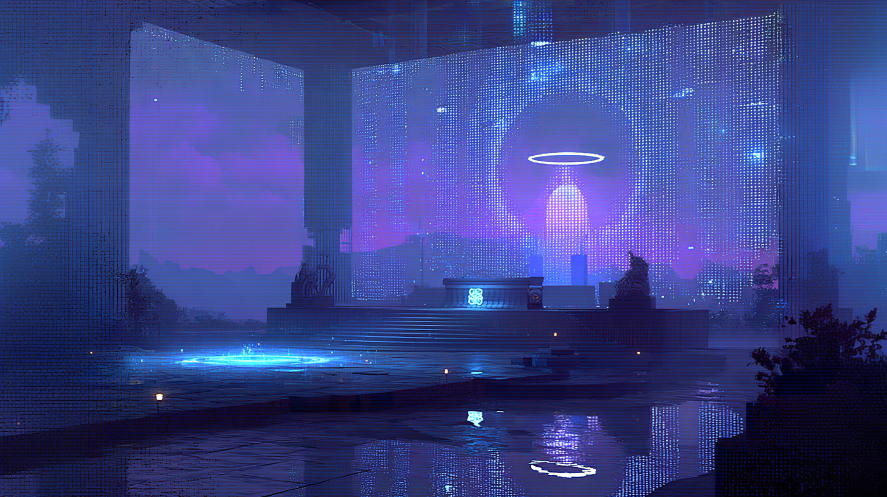
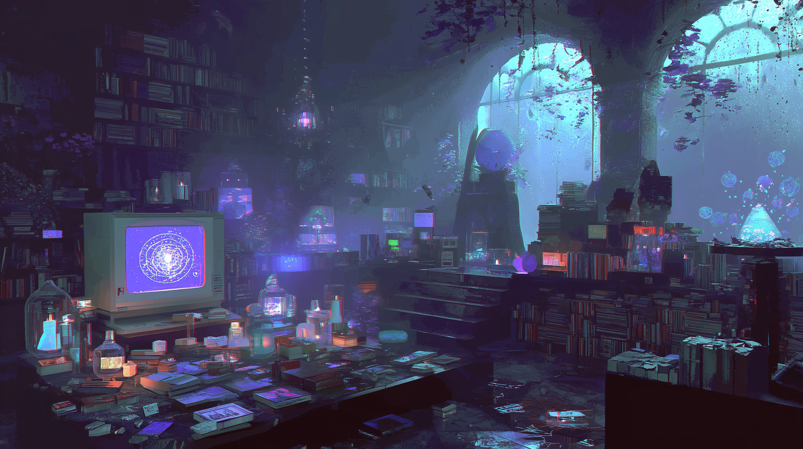

Robo World:
Belief
You've been
assigned to...

- a single chain -
- a single principle -
- the highest principle -
- interpretations of the GOD -

DOCTRINE
a single chain of interpretation & adjudication by a highest principle


Learning to obey
and make judgments
is the most fundamental way
to maintain stability.
- GOD is ever-present -
Every thought is a node in an infinite grid.
- GOD brings us eternal truth -



The Place to Build a Connection with the GOD
Blessing_Ground_Y80


WARNING:
FICTIONAL
CONTENT

Signal Searching
After Y49, we are still continuously
attempting to establish contact with Earth.
We firmly believe that GOD still exists on the home planet.
The belief in the singularity of internal truth
One of the three original beliefs
Theological_Archive_Y82
End of Transmission
The Above Content is Only Applicable to the Robo World